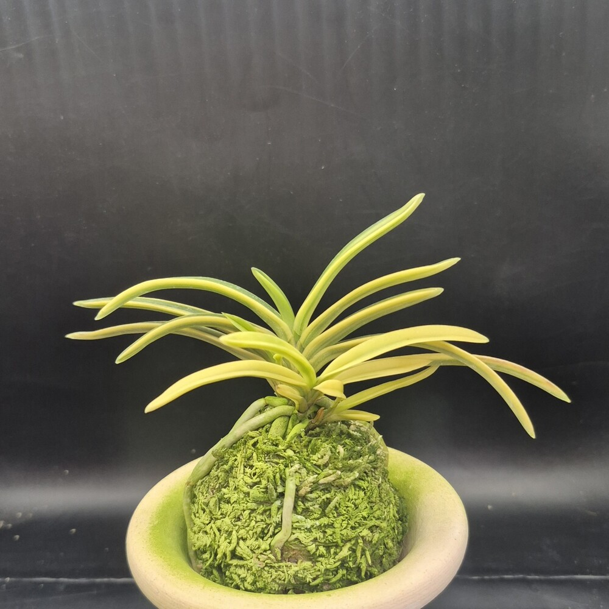

CSFART
숯돌꽃 난농원
CSFART 상품 안내
무지
호·중반
복륜
특예
호반
화물
입문·기타란
자재
← 메뉴를 좌우로 밀어보세요 →
CSFART COLLECTION
호·중반
상품
백결 단엽(白潔)
130,000원
분류 확인 필요 · CSFART 상품 도감
금두(金兜) 6121 · 황호 풍란
60,000원
호·중반 · 반직선형 중형 · 황색 줄무늬

보금(寶錦) 3811 · 백황호 풍란
80,000원
호·중반 · 백황호 · 희엽
금광금(金廣錦) 1521 · 황호
150,000원
넓은 잎과 황색 줄무늬 · CSFART금광금_1521